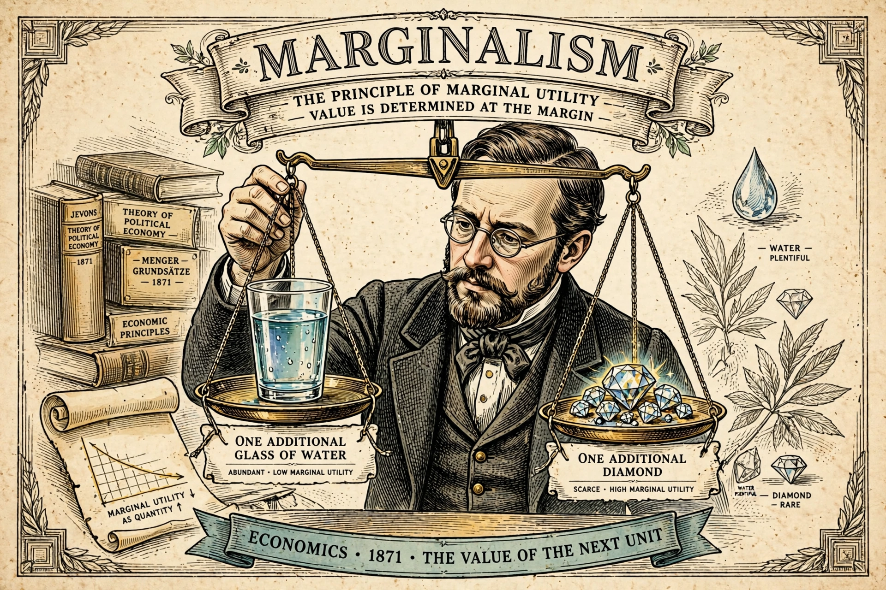

Marginalism is a theory of economics that attempts to explain prices and value by differences of one unit — marginal utility and marginal cost — rather than by total utility or labour embodied.

| Key figures | Jevons, Menger, Walras |
|---|---|
| Era | Marginal Revolution, 1870s |
In the 1870s William Stanley Jevons, Carl Menger, and Léon Walras independently developed marginal utility theory, resolving the diamond–water paradox: price reflects marginal, not total, usefulness. It became the foundation of neoclassical economics.
Core ideas include diminishing marginal utility, marginal productivity, and decision-making at the margin.